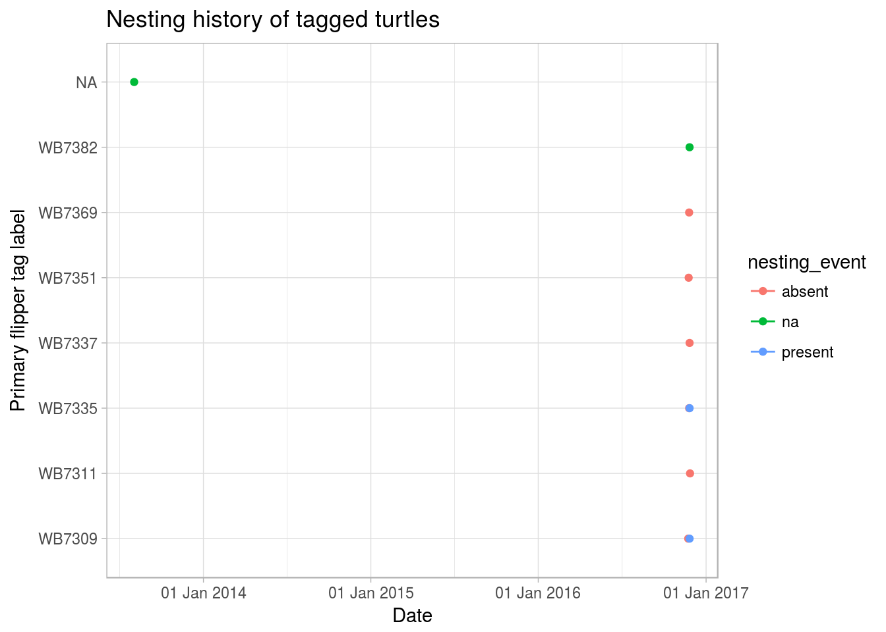
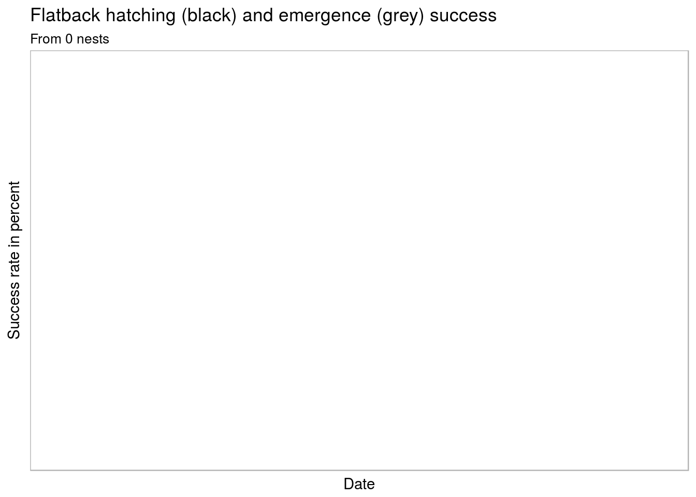

require(dplyr)
require(lubridate)
require(stringr)
require(tidyverse)## Warning in library(package, lib.loc = lib.loc, character.only = TRUE,
## logical.return = TRUE, : there is no package called 'tidyverse'require(magrittr)
require(listviewer)
require(leaflet)
require(wastdr)
require(scales)
require(ggplot2)wastdr requires two settings, the API URL and an access token or a username / password. wastdr functions expect these settings to be available as environment variables. For convenience, wastdr_setup sets the correct variables, while wastdr_settings retrieves the currently set values.
If you are an employee of the Western Australian Department of Biodiversity, Conservation and Attractions (DBCA), formerly the Department of Parks and Wildlife, then you can find your valid WAStD API Token at WAStD under “My Profile” and run:
wastdr::wastdr_setup(api_token = "c12345asdfqwer")If you are an external collaborator, you will have given a username and password to access the WAStD API.
wastdr::wastdr_setup(api_un = "my_username", api_pw = "my_password")Review the settings with:
wastdr::wastdr_settings()## <wastdr settings>
## API URL: https://strandings.dpaw.wa.gov.au/api/1/
## API Token: Token c12345asdfqwer
## API Username: my_username
## API Password: my_passwordWith your valid API key and access to the WAStD API, you can retrieve data with get_wastd.
turtle_nest_encounters <- get_wastd('turtle-nest-encounters')
listviewer::jsonedit(turtle_nest_encounters$content, width = 800, height = 600)
tracks <- parse_turtle_nest_encounters(turtle_nest_encounters)For this vignette, we’ll use the packaged example data.
require(wastdr)
data("animal_encounters")
data("turtle_nest_encounters_hatched")
data("turtle_nest_encounters")
listviewer::jsonedit(animal_encounters$content, width = 800, height = 600)# listviewer::jsonedit(turtle_nest_encounters_hatched$content)
# listviewer::jsonedit(turtle_nest_encounters$content)
animals <- parse_animal_encounters(animal_encounters)
nests <- parse_turtle_nest_encounters(turtle_nest_encounters_hatched)
tracks <- parse_turtle_nest_encounters(turtle_nest_encounters)
DT::datatable(animals)# DT::datatable(nests)
# DT::datatable(tracks)This section will be expanded to show how to filter the data, e.g.
#' makeAwesomeIcon factory
mkicon <- function(ico, col) makeAwesomeIcon(icon = ico, markerColor = col)
trackIcons <- awesomeIconList(
"cheloniidae-fam" = mkicon('align-center', 'black'),
"chelonia-mydas" = mkicon('align-center', 'green'),
"eretmochelys-imbricata" = mkicon('align-center', 'blue'),
"natator-depressus" = mkicon('align-center', 'red'),
"caretta-caretta" = mkicon('align-center', 'yellow')
)
tagIcons <- awesomeIconList(
"cheloniidae-fam" = mkicon('tag', 'black'),
"chelonia-mydas" = mkicon('tag', 'green'),
"eretmochelys-imbricata" = mkicon('tag', 'blue'),
"natator-depressus" = mkicon('tag', 'red'),
"caretta-caretta" = mkicon('tag', 'yellow')
)
nestIcons <- awesomeIconList(
"cheloniidae-fam" = mkicon('baby-formula', 'black'),
"chelonia-mydas" = mkicon('baby-formula', 'green'),
"eretmochelys-imbricata" = mkicon('baby-formula', 'blue'),
"natator-depressus" = mkicon('baby-formula', 'red'),
"caretta-caretta" = mkicon('baby-formula', 'yellow')
)
leaflet(tracks, width = 800, height = 600) %>%
addProviderTiles("Esri.WorldImagery", group = "Aerial") %>%
addProviderTiles("OpenStreetMap.Mapnik", group = "Place names") %>%
setView(lng=115.0, lat=-21.45, zoom=12) %>%
addAwesomeMarkers(~longitude, ~latitude,
data = filter(tracks, nest_type != "hatched-nest"),
icon = ~trackIcons[species],
label = ~paste("Track", date, nest_age, species, nest_type),
# popup = ~paste("Track", date, nest_age, species, nest_type),
group = "Tracks") %>%
addAwesomeMarkers(~longitude, ~latitude, data = animals,
icon = ~tagIcons[species],
label = ~paste("Tag", date, species, name, "nesting:", nesting_event),
# popup = ~paste("Tag", date, species, name, "nesting:", nesting_event),
group = "Tags") %>%
# addHeatmap(data=tags, lng = ~longitude, lat = ~latitude,
# blur = 20, max = 1, radius = 15) %>%
addAwesomeMarkers(~longitude, ~latitude,
data = nests,
icon = ~nestIcons[species],
label = ~paste("Nest", date, species,
"HS", as.numeric(hatching_success),
"%, ES", as.numeric(emergence_success), "%"),
popup = ~paste("Nest", date, species,
"HS", as.numeric(hatching_success),
"%, ES", as.numeric(emergence_success), "%"),
group = "Nests") %>%
addLayersControl(baseGroups = c("Aerial", "Place names"),
overlayGroups = c("Tracks", "Tags", "Nests"))ggplot(animals, aes(x = date, y = name, color = nesting_event)) +
geom_point() +
geom_line(aes(date, name)) +
scale_x_date(breaks = scales::pretty_breaks(),
labels = scales::date_format("%d %b %Y")) +
labs(x="Date", y ="Primary flipper tag label") +
ggtitle("Nesting history of tagged turtles") +
theme_light() ## geom_path: Each group consists of only one observation. Do you need to
## adjust the group aesthetic?
# + ggsave(paste0("data/nesting_history.pdf"), width = 7, height = 20)nests_with_hs <- filter(nests, hatching_success >= 0, species == "natator-depressus")
ggplot(nests_with_hs, aes(group=date, x=date)) +
geom_boxplot(aes(y=as.numeric(hatching_success)), na.rm=TRUE, color="black") +
geom_boxplot(aes(y=as.numeric(emergence_success)), na.rm=TRUE, color="gray") +
scale_x_date(breaks = scales::pretty_breaks(),
labels = scales::date_format("%d %b %Y")) +
xlab("Date") +
ylab("Success rate in percent") +
ggtitle("Flatback hatching (black) and emergence (grey) success",
subtitle = paste("From", nrow(nests_with_hs), "nests")) +
theme_light() # + ggsave(paste0("data/flatback_hs_es.pdf"), width = 7, height = 5)
success_summary <- nests %>%
filter(hatching_success >= 0) %>%
group_by(species) %>%
dplyr::summarize(
"count" = n(),
"clutch_size_mean" = mean(clutch_size) %>% round(digits = 2),
"clutch_size_sd" = sd(clutch_size) %>% round(digits = 2),
"clutch_size_min" = min(clutch_size),
"clutch_size_max" = max(clutch_size),
"hatching_success_mean" = mean(hatching_success) %>% round(digits = 2),
"hatching_success_sd" = sd(hatching_success) %>% round(digits = 2),
"hatching_success_min" = min(hatching_success),
"hatching_success_max" = max(hatching_success),
"emergence_success_mean" = mean(emergence_success) %>% round(digits = 2),
"emergence_success_sd" = sd(emergence_success) %>% round(digits = 2),
"emergence_success_min" = min(emergence_success),
"emergence_success_max" = max(emergence_success)
)
DT::datatable(success_summary,
caption = "Nesting success summary",
options = list(paging = F))# palette = rainbow(10,
# start = rgb2hsv(col2rgb('red'))[1],
# end = rgb2hsv(col2rgb('green'))[1])
# pal <- colorBin(palette, nests_with_hs$hatching_success, 10, pretty = FALSE)
#
# leaflet(
# filter(nests, hatching_success >= 0, species == "natator-depressus")) %>%
# addProviderTiles("Esri.WorldImagery", group = "Aerial") %>%
# addProviderTiles("OpenStreetMap.Mapnik", group = "Place names") %>%
# setView(lng=115.02, lat=-21.463, zoom=16) %>%
# # addPolygons(data = tagging_area,
# # weight = 1,
# # color = "blue",
# # opacity = 0.5,
# # group = "Tagging area") %>%
# addCircleMarkers(~longitude, ~latitude,
# # radius = ~clutch_size/5,
# color = ~pal(hatching_success),
# label = ~paste("Nest", date, species,
# "CS", as.numeric(clutch_size),
# "HS", as.numeric(hatching_success),
# "%, ES", as.numeric(emergence_success), "%"),
# stroke = FALSE,
# fillOpacity = 0.8,
# group = "Flatback nests") %>%
# addLegend("bottomright",
# pal = pal,
# values = ~hatching_success,
# title = "Hatching success",
# opacity = 1) %>%
# addLayersControl(
# baseGroups = c("Aerial", "Place names"),
# overlayGroups = c("Tagging area", "Flatback nests"))
# # %T>% mapshot(file = "nesting_success_map.png")